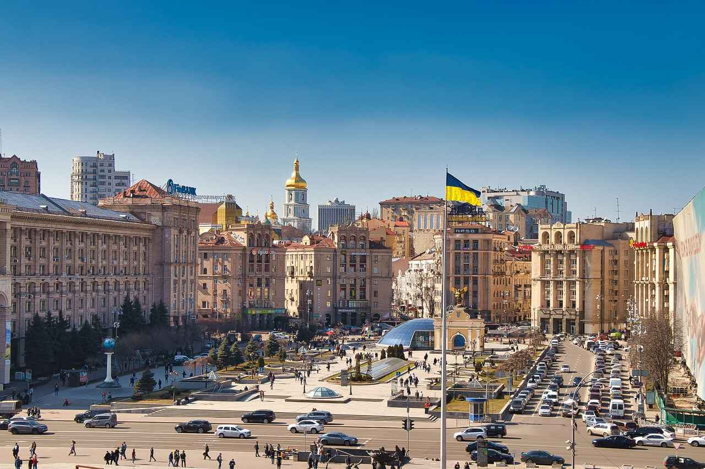

Overview

Ukraine, located at the crossroads of Eastern Europe, is a country of vibrant culture, deep-rooted traditions, and breathtaking landscapes. Known as the breadbasket of Europe, Ukraine boasts a history that dates back thousands of years, with influences from Cossacks, Kyivan Rus, and Soviet eras blending to create a unique identity.
Food

Ukrainian cuisine is hearty and flavorful, showcasing a blend of traditional farming ingredients. Iconic dishes include borsh, a beetroot soup served with sour cream, and varenyky, dumplings filled with potatoes, cheese, or cherries. Don’t forget to try holubtsi (cabbage rolls) and paska, a sweet bread prepared during Easter.
Festivals

Ukraine’s festivals are colorful celebrations of its culture and heritage. Popular events include Malanka (Ukrainian New Year), Ivana Kupala (a midsummer festival with bonfires and traditional songs), and Independence Day on August 24th. These festivals are characterized by vibrant folk music, traditional costumes, and community gatherings.
History
Ukraine’s history is a story of resilience and pride. From the ancient kingdom of Kyivan Rus to the modern independence movement, the country has endured invasions and challenges while preserving its identity. Landmarks such as Kyiv Pechersk Lavra and Lviv’s Old Town showcase Ukraine’s architectural and cultural heritage.
Music

Ukrainian music is a blend of traditional folk and modern influences. The bandura, a stringed instrument, is iconic in Ukrainian culture. Folk songs like "Shchedryk" (known globally as “Carol of the Bells”) and vibrant dances such as the Hopak are integral to the nation’s artistic identity.